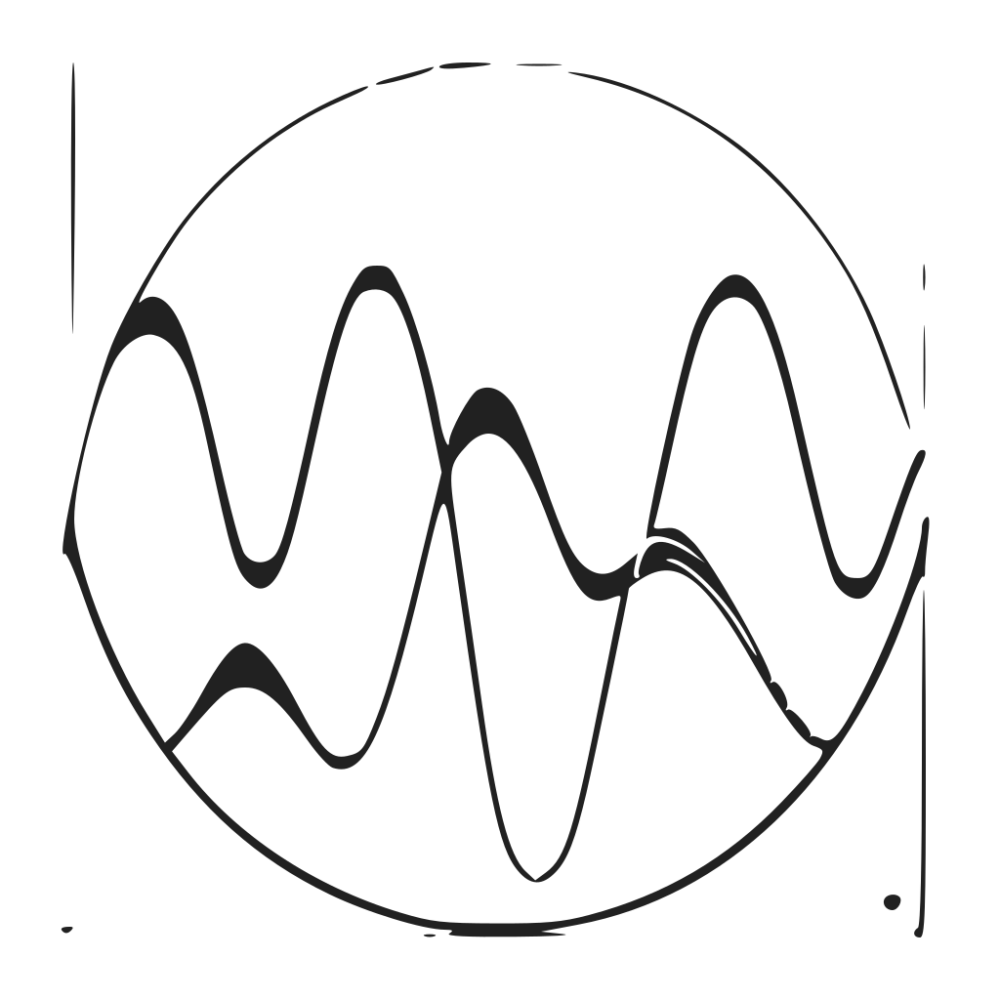

Normalizing Flows
Deep Generative Models
Introduction
The problem that normalizing flows aim to address is turning a simple distribution into a complex, multi-modal one in an invertible manner. Why would we want to do that? Training a machine learning model usually means tuning its parameters to maximize the probability of observed training data under the model. To quantify this probability, we have to assume some probability distribution as the model’s output. In classification, this is typically a categorical distribution and in regression usually a Gaussian, mostly because it’s the only non-uniform continuous distribution we really know how to deal with. However, assuming the model output to be distributed according to a Gaussian is problematic because the world is complicated and the true probability density function (PDF) of actual data will in general be completely unlike a Gaussian.
from psutil import virtual_memory
ram_gb = virtual_memory().total / 1e9
print('Your runtime has {:.1f} gigabytes of available RAM\n'.format(ram_gb))
if ram_gb < 20:
print('Not using a high-RAM runtime')
else:
print('You are using a high-RAM runtime!')
Introduction
The problem that normalizing flows aim to address is turning a simple distribution into a complex, multi-modal one in an invertible manner. Why would we want to do that? Training a machine learning model usually means tuning its parameters to maximize the probability of observed training data under the model. To quantify this probability, we have to assume some probability distribution as the model’s output. In classification, this is typically a categorical distribution and in regression usually a Gaussian, mostly because it’s the only non-uniform continuous distribution we really know how to deal with. However, assuming the model output to be distributed according to a Gaussian is problematic because the world is complicated and the true probability density function (PDF) of actual data will in general be completely unlike a Gaussian.